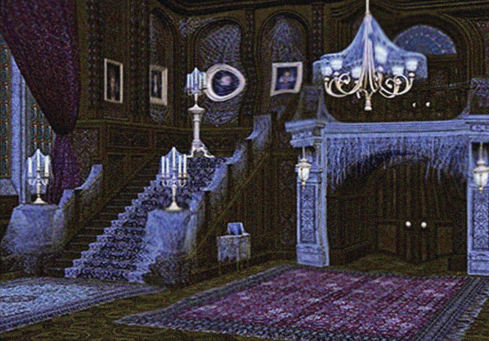

PHEW! You escaped the feeding frenzy! Now the real challenge begins.
Welcome to Danny's mansion >:)! Something feels off here... The portraits,
the chandelier, the DOORS! It's as if they are being distorted by time
itself. AHA! Time passes MUCH quicker in here. You can feel your thoughts
racing against each other. There is absolutely no time to waste!! Locating
cookie butter is the priority. You are somehow able to make out the
faintest

Current HP: 100
Current time: 8:24 PM
Inventory: